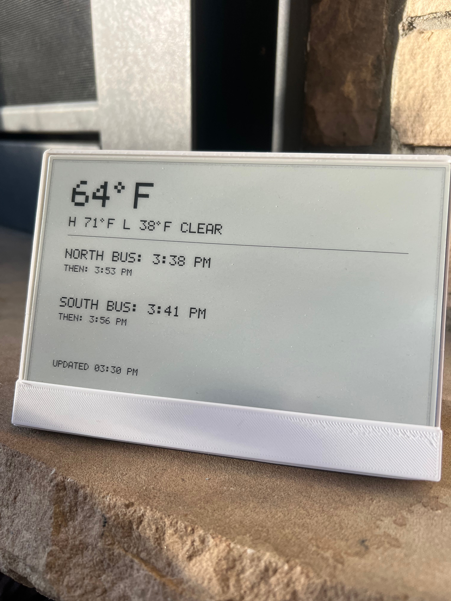

A cross between a Little Free Library, a bulletin board, and a website. Solar-powered with an e-ink screen. Shows bus times, upcoming events, weather, and community posts. Highly visible in sunlight with no tracking or data collection. Kid friendly, extensible, and open source.
Jon Bo - Founding engineer building community tools for a decade.
Neil Yarnal - Brand designer, artist, and technologist at Local*Agency.
3/15/2026 - indoor prototype with weather, art interaction, and bus station information; collecting feedback from the community.
